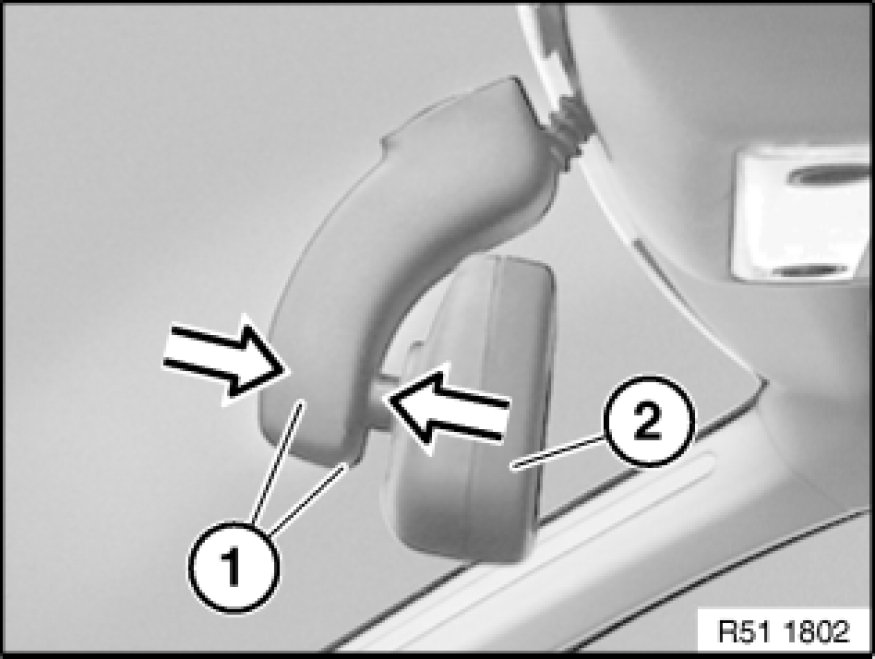
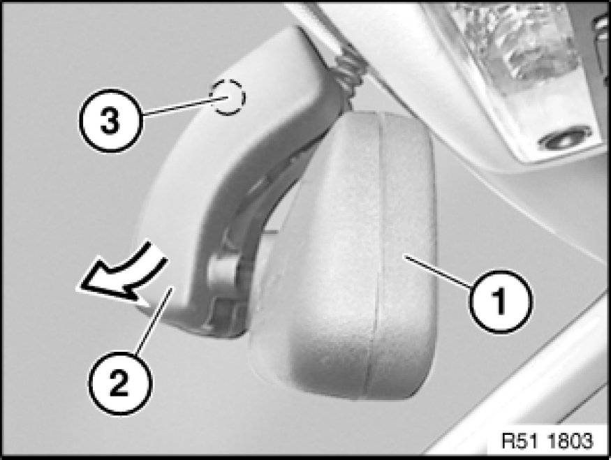
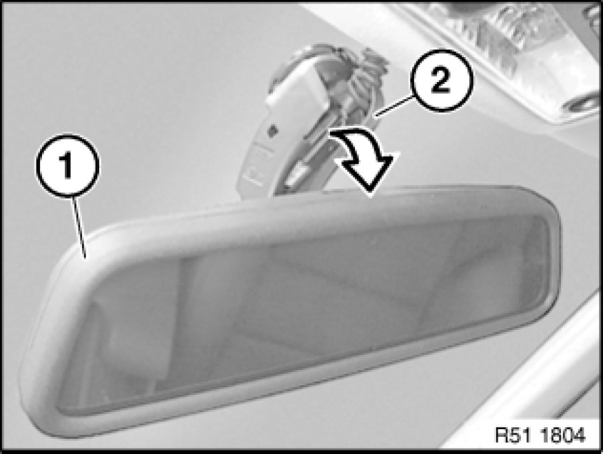
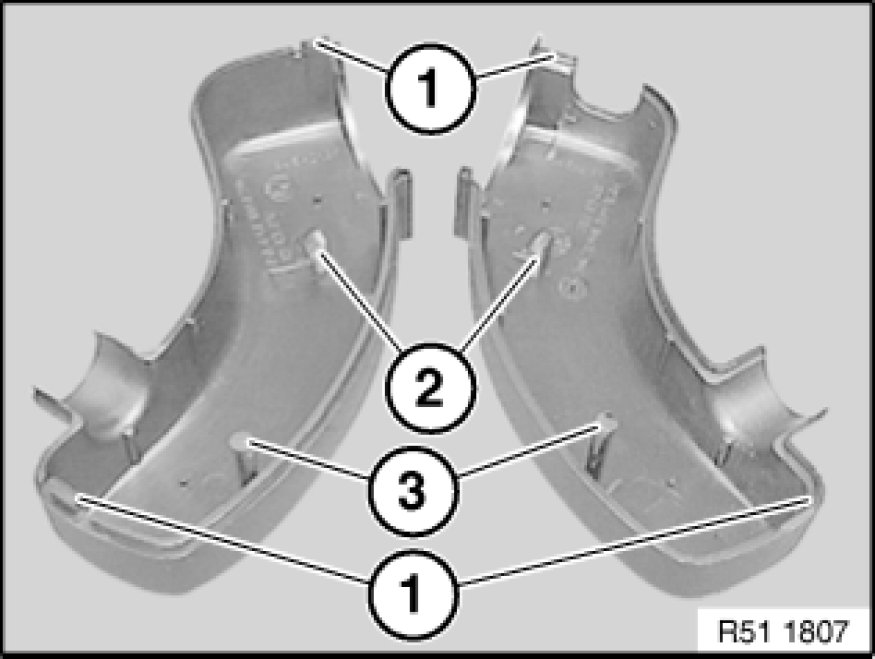
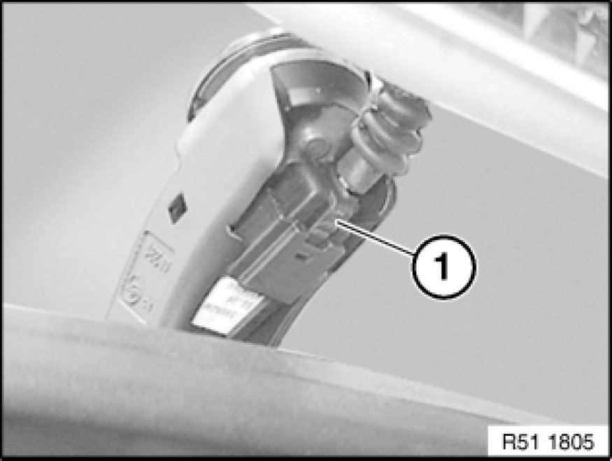
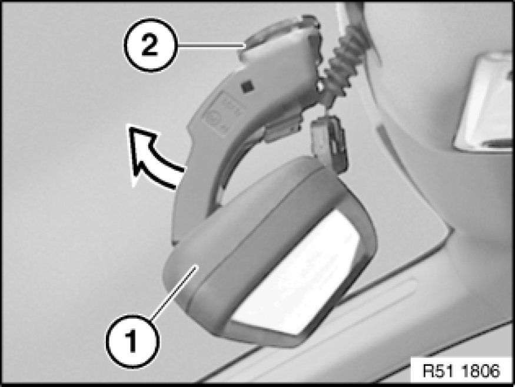
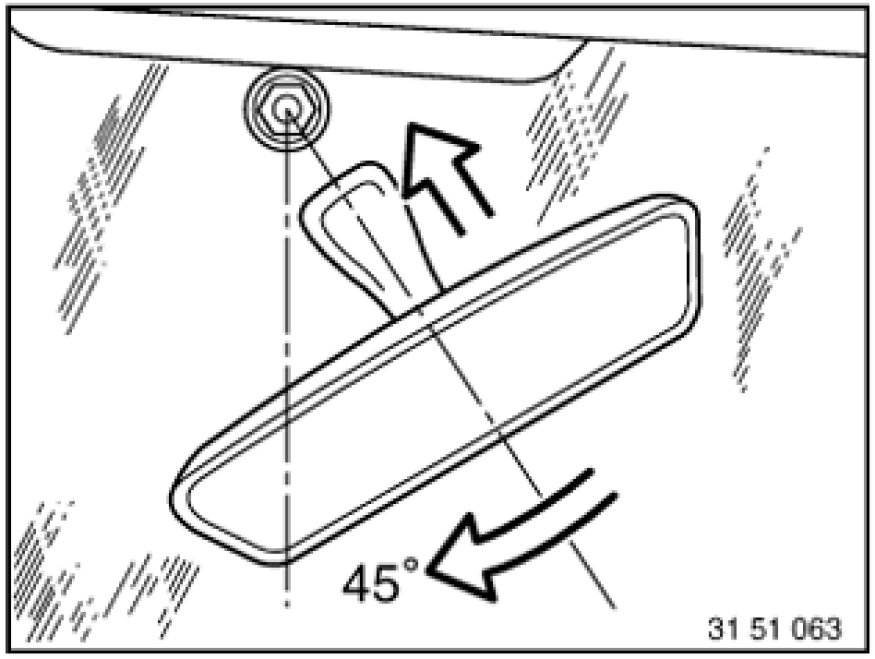

Removing and Installing/Replacing Interior Rearview Mirror (With Mirror Arm End
51 16 060 - Removing and installing/replacing interior rearview mirror (with mirror arm end caps)

Important!
Work may only be carried out at a room/object temperature of 18 ... 28 °C.
If this cannot be guaranteed (cold/hot countries), it is necessary to equalize the temperature of the windscreen, mirror foot and rearview mirror (e.g. car left to stand indoors or in the shade for at least 30 minutes).

Version with remote control for central locking:
If necessary, disconnect negative lead from battery Instructions for Disconnecting and Connecting Battery.
Version with compass:
Check compass function if replacing or after disconnecting interior mirror plug connection or battery.
If necessary, calibrate compass in interior rearview mirror Testing and Inspection.
Important!
To avoid breaking windscreen:
Snap out (press) rearview mirror only in direction of travel towards windscreen.
Do not under any circumstances twist the mirror foot when removing.
Twisting the mirror off the mirror mount will damage the rear catch.
If the rear catch is damaged, the mirror will be loose when installed and must be replaced.

Note:
Do not exert any pressure on mirror foot when removing end caps (1).
Press end caps (1) towards mirror housing (2); this releases clip connection of both caps (1).
In order not to create any tension at the mirror foot, simultaneously apply counterpressure to the mirror housing when removing the end caps.

Twist mirror (1) at an angle towards front and right/top.
Swivel left end cap (2) off ball neck in direction of arrow; this detaches the engagement clip (3) from the metal foot.

Twist mirror (1) at an angle towards front and left/top.
Swivel right end cap (2) off ball neck in direction of arrow; this detaches the engagement clip from the metal foot.

Installation Note:
Clips (1) and retaining hooks (2) of end caps (3) must not be damaged, replace if necessary.

Version with cable (X):
Disconnect plug connection (1).

Important!
Risk of damage!
Do not pull off rearview mirror (1) from windscreen against direction of travel and or snap out by turning.
Snap out interior mirror (1) from mirror mount (2) towards front with increasing pressure (not abruptly) and remove.

Installation Note:
1. - Twist mirror foot by approx. 45° and fit to mirror mount.
2. - Turn mirror foot until it engages on mirror base.
Only replace with version with remote control for central locking:
Initialize all transmitters (ignition keys), refer to Owner's Handbook.